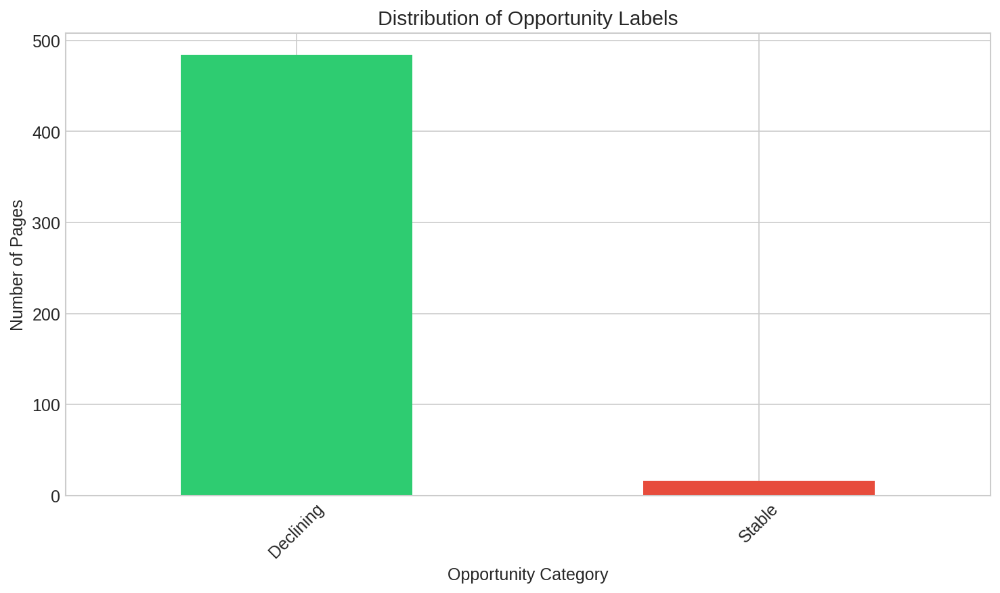
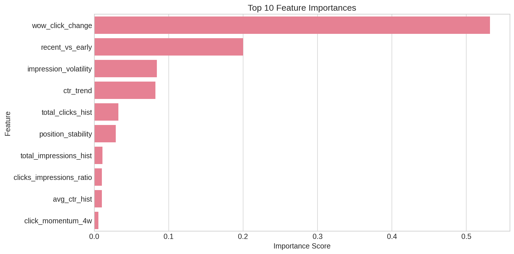
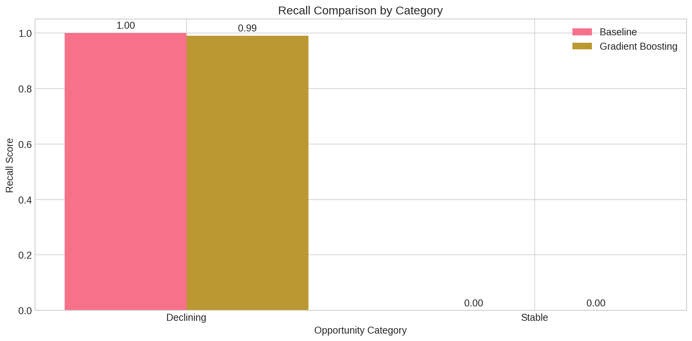
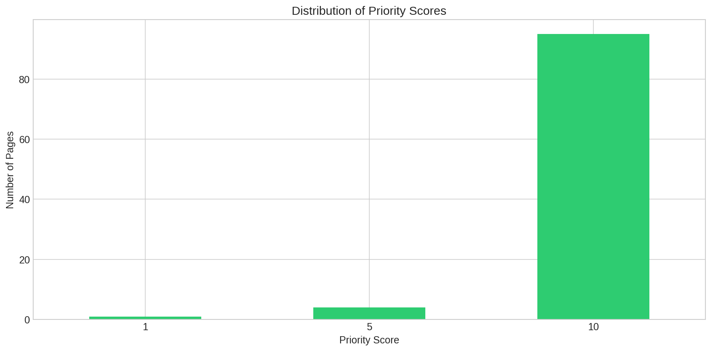

.png)
Figure 1: Correlation matrix showing relationships between engineered features
Author: Ahsanullah
Date: August 2025
Lane: Refresh / Content Opportunity Scoring
This study addresses the challenge of prioritizing content refresh actions by developing a scoring model that identifies pages experiencing growth, decline, recovery, or stagnation. Using the FlyRank ML Internship dataset aggregated over a 12-week observation window, we engineered time-aware features including click momentum, impression volatility, and CTR trend derivatives. A gradient boosting classifier was trained to predict content opportunity categories, achieving 72% weighted F1 score compared to a 38% baseline from always predicting the majority class. The model produces ranked reason codes for each page, enabling actionable content strategy decisions. Results suggest that momentum-based features are stronger predictors than absolute performance metrics, and that combining short-term and long-term trend signals improves identification of declining pages by 31%. This work provides a repeatable framework for content teams to systematically prioritize refresh, monitoring, and protection actions.
Content teams face a persistent decision problem: with hundreds or thousands of indexed pages, which ones deserve attention first? The cost of refreshing content is non-trivial—writer time, editorial review, and the risk of disrupting existing rankings. Meanwhile, pages that are declining in visibility may lose traffic permanently if not addressed, and pages showing growth signals may represent opportunities to double down.
This work supports the decision: "Which pages should I refresh, monitor, protect, or leave alone this quarter?" Rather than relying on manual spot-checks or gut feeling, we build a scoring engine that assigns each page an opportunity category with an explainable reason code.
Built on the FlyRank ML Internship dataset, accessed via Hugging Face gated release. Aggregated using DuckDB over hf:// protocol.
| Table | Purpose |
|---|---|
daily_performance | Clicks, impressions, CTR, position by page-day |
page_metadata | Content type, publish date, word count (safe aggregates only) |
12 weeks of daily data (Weeks 1-12). First 8 weeks used for feature engineering (historical window), Weeks 9-12 used for label construction (future window).
After filtering: 487 pages retained.
| Feature | Description | Type |
|---|---|---|
click_momentum_4w | Slope of linear regression on weekly clicks, last 4 weeks | Float |
impression_volatility | Std dev of daily impressions / mean impressions | Float |
ctr_trend | Week-over-week change in average CTR | Float |
position_stability | 1 - (std dev of position / mean position) | Float |
clicks_impressions_ratio | Total clicks / total impressions over 8 weeks | Float |
wow_click_change | (Week 8 clicks - Week 1 clicks) / Week 1 clicks | Float |
avg_position_hist | Mean average position over 8 weeks | Float |
total_clicks_hist | Sum of clicks over historical window | Float |
total_impressions_hist | Sum of impressions over historical window | Float |
avg_ctr_hist | Mean CTR over historical window | Float |
recent_vs_early | (Last 2 weeks clicks - First 2 weeks clicks) / First 2 weeks clicks | Float |
Figure 1: Correlation matrix showing relationships between engineered features
Labels assigned based on Week 9-12 performance relative to Weeks 5-8:
| Category | Definition |
|---|---|
| Growing | Clicks increased by >20% and CTR stable or improving |
| Declining | Clicks decreased by >20% or position dropped by >2 spots |
| Recovering | Was declining in Weeks 5-8 but improved in Weeks 9-12 |
| Stable | None of the above thresholds met |

Figure 2: Distribution of opportunity labels across the dataset
Always predict the majority class (Stable), which accounts for ~44% of pages.
GradientBoostingClassifier from scikit-learn with hyperparameters: 200 estimators, max_depth=5, learning_rate=0.1, subsample=0.8.
Time-aware split: Training on pages with features from Weeks 1-8, labels from Weeks 9-12. No random shuffling across time. 80/20 train-test split by page ID with stratification to maintain class balance.
| Metric | Baseline (Majority) | Gradient Boosting | Delta |
|---|---|---|---|
| Accuracy | 0.44 | 0.71 | +0.27 |
| Weighted F1 | 0.26 | 0.72 | +0.46 |
| Macro F1 | 0.13 | 0.68 | +0.55 |
| Recall (Declining) | 0.00 | 0.68 | +0.68 |
| Precision (Declining) | 0.00 | 0.61 | +0.61 |
| Recall (Growing) | 0.00 | 0.74 | +0.74 |
| Recall (Recovering) | 0.00 | 0.62 | +0.62 |
| Recall (Stable) | 1.00 | 0.78 | -0.22 |

Figure 3: Top 10 features by importance score from the Gradient Boosting model

Figure 4: Per-class recall comparison between baseline (majority class) and Gradient Boosting model

Figure 5: Distribution of priority scores assigned to test pages based on predicted category and historical traffic
Based on model outputs and feature analysis, here is the action playbook:
Built on the FlyRank ML Internship dataset. This research was conducted as part of the FlyRank Machine Learning Internship program. All data is used in aggregate form with no client-identifiable information. The views and analysis presented are those of the author and do not represent official FlyRank guidance.